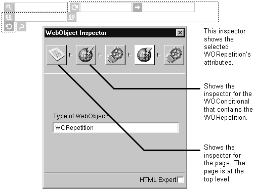

The inspector window displays the bindings, attributes, and other settings for the currently selected element and other elements in the HTML hierarchy.
To open the inspector window, choose Tools->Inspector or click the inspector button on
the component window.
Each element on an HTML page occupies a place in the hierarchy. That is, a button is
contained by a form, which is contained by the body, which is contained by the page. The
page is the highest level in the hierarchy.
When you inspect an element, the icon path in the inspector shows an icon for each element in the hierarchy. Dynamic elements display two icons in the icon path. One represents the element's HTML attributes and one represents the element's bindings. For
example, suppose you have WORepetition that is contained in a WOConditional (so that
the WORepetition displays its contents only if a certain condition is true.) When you
inspect the WORepetition, you'll see five icons in the inspector's icon path: the page
inspector, the WOConditional HTML inspector, the WOConditional bindings inspector,
the WORepetition HTML inspector, and the WORepetition bindings inspector.

The HTML Expert check box applies to the HTML attributes inspector only (not to the
bindings inspector). This check box turns on HTML Expert mode. When in HTML Expert
mode, the inspector window gives you a representation of the selected element in HTML.
You can add, delete, or change attributes. Click the HTML Expert check box again to turn
off HTML Expert mode. Note: WebObjects Builder does no checking that the attribute
you entered is valid HTML or has a valid value.
|  Table of Contents
Table of Contents
 Previous Section
Previous Section
 Next Section
Next Section